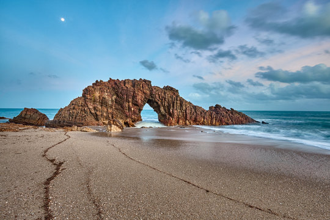
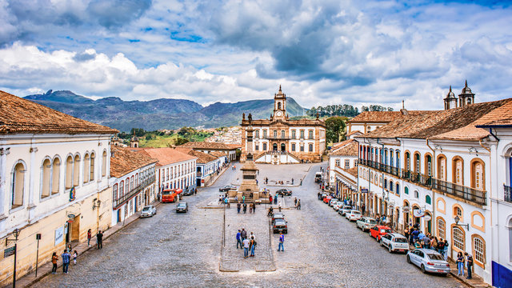
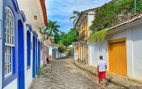

Os Destinos Mais Visitados do Brasil
Descubra os lugares mais incríveis para explorar no Brasil:
Praias

Fernando de Noronha
Conhecida por suas águas cristalinas, rica vida marinha e cenários paradisíacos. Ideal para mergulho e relaxamento.

Jericoacoara
Um paraíso escondido no Ceará, com dunas douradas, lagoas de águas transparentes e pôr do sol espetacular.

Porto de Galinhas
Famosa por suas piscinas naturais e peixinhos coloridos, localizada em Pernambuco. Perfeita para famílias e casais.
Cidades Históricas

Ouro Preto
Patrimônio mundial da UNESCO, esta cidade em Minas Gerais é famosa por suas igrejas barrocas e arquitetura colonial.

Paraty
Uma cidade colonial no Rio de Janeiro, com ruas de pedra, casarões antigos e belezas naturais ao redor.